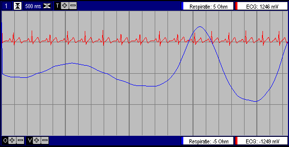

|
Fysio Flex
System
|
Inleiding |
Respiratie
Module
Gebruikers Handleiding |
Inleiding 
Deze module meet de impedantie van de thorax.
De module moet in combinatie met een standaard ExG-voorversterker worden
gebruikt, waardoor gelijktijdig ECG en Respiratie signalen beschikbaar
komen.
Afhankelijk van de gewenste nauwkeurigheid, kan een 2-punts of een
4-punts meting worden gerealiseerd.

Specificaties
Dynamisch Impedantie verschil, voor volle schaal: 20 Ohm (+/-
10 Ohm)
Statisch Impedantie Bereik 0 - 2 kOhm
Frequentie Bereik ?? .. 1 Hz
Hulp stroom <10 uAeff, sinus, 50 kHz
Veiligheid IEC-601 -CF, mits geplaatst in het Fysio Flex Systeem.
Gebruik
De electroden dienen goed (lage impedantie) en stevig (bewegings-artefacten)
bevestigd te worden en zo geplakt te worden dat een groot deel van de thorax
wordt omvat.
Een zeer goede methode is buik-links onder en schouder-rug rechts achter..
De standaard ECG-II afleiding (buik links-onder, schouder rechts_voor)
is een goed (en practisch beter hanteerbaar) alternatief.
Na het aan sluiten van de electroden kan het zijn dat enige seconden
gewacht moet worden voordat het Respiratie signaal zichtbaar wordt, omdat
eerst de statische impedantie moet worden bepaald.
Bij een 4-punts meting worden de 4 electroden zo goed mogelijk op een
lijn geplaatst. De twee buitenste electroden worden aangesloten op de stroombron,
de twee binnenste electroden worden aangesloten op de ingang van de ECG-versterker.
Er is geen ervaring met het plaatsen van 4 electroden. Wel is duidelijk
dat de 2 binnenste electroden niet op 1 van de grote bloedvaten geplaatst
mag worden (dus niet op of in de buurt van het borstbeen of het hart),
omdat dan de hoeveelheid bloed gemeten zal worden in plaats van de longinhoud.
De plaatsing van de buitenste electroden is minder critisch.
Deze module is niet geschikt voor haemodynamische metingen, vanwege
de geringe bandbreedte.
© Copyright Instrumentele Dienst, 1999
 SM, last updated 28-01-2000
SM, last updated 28-01-2000